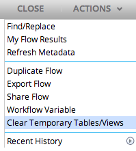
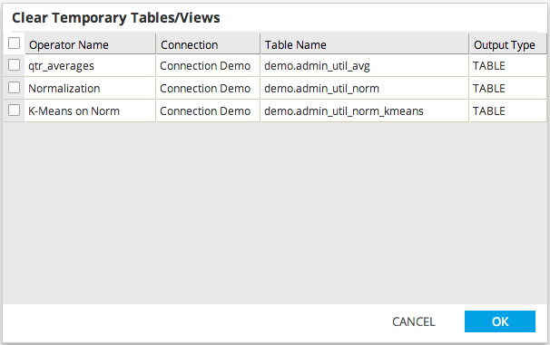

Clear Temporary Tables/Views
Users are able to drop temporary tables and views (those created by Alpine operators in a workflow).
To open the Clear Temporary Tables/Views dialog, click Clear Temporary Tables/Views in the Actions drop-down.

- Each Table/View currently configured for creation in the open workflow will be displayed in the dialog.
- The user can specify each table to be dropped from the database by clicking the checkbox adjacent to the corresponding operator's name
- Click the upper left checkbox to select all tables.
- Click OK to drop all selected tables from the database or click Cancel to leave the dialog without dropping any tables.
